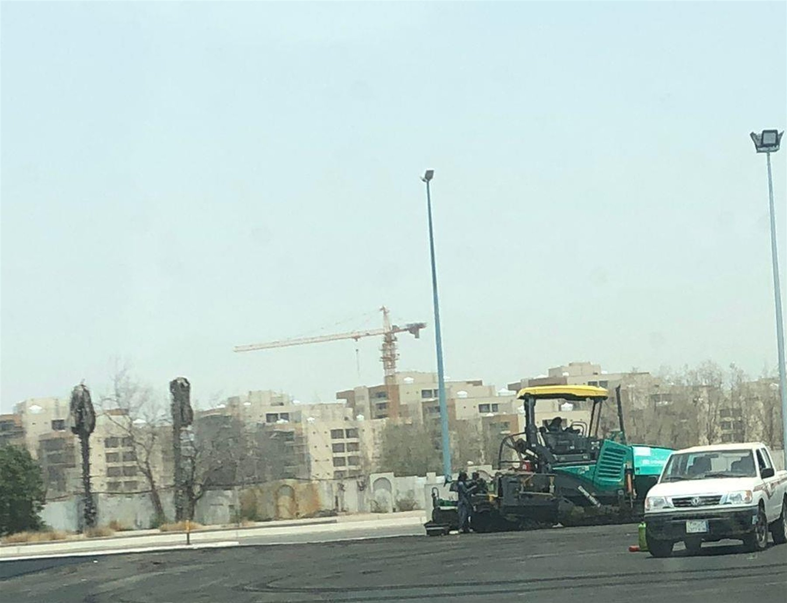

01
التعدين وإدارة المحاجر
تصميم وتخطيط وتشغيل المحاجر، ضبط الجودة، التحميل والنقل وتوريد المواد الخام.
اطلب الخدمة
تصميم وتخطيط وتشغيل المحاجر، ضبط الجودة، التحميل والنقل وتوريد المواد الخام.
اطلب الخدمة
الحفر والأعمال الترابية ودعم الجوانب وخطوط المياه والصرف والطرق.
اطلب الخدمة
